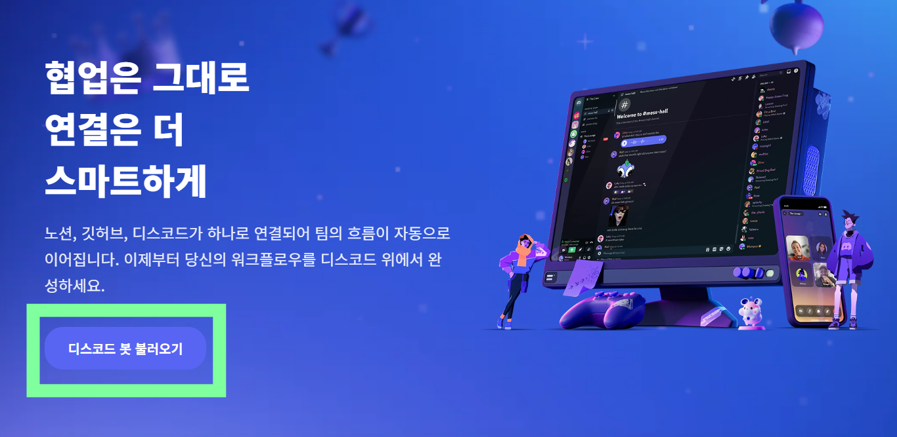
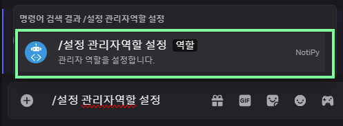
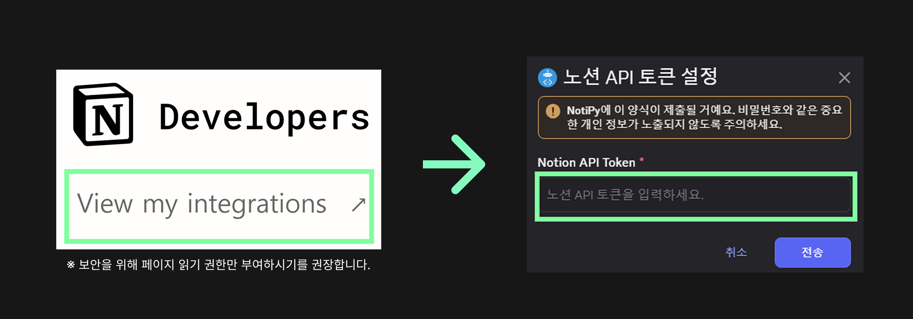
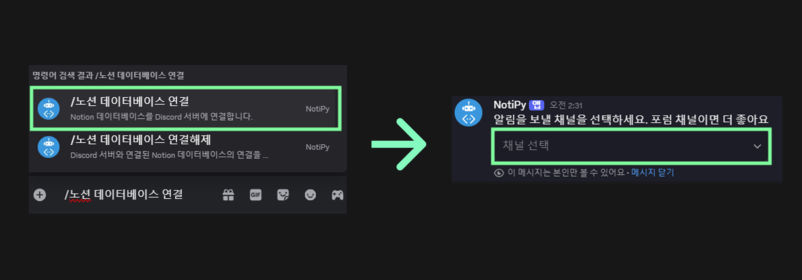

Zoom, Google Meet와는 달리
디스코드는 시간 제한 없는 회의가 가능합니다!
회의 후 대화, 공지, 자료까지 지속적인 협업이 이루어지는 곳,
바로 디스코드이기 때문입니다.
Notipy는 별도 서버 설치 없이,
초대만 하면 사용할 수 있는 봇입니다.
홈페이지 메인화면에서 디스코드 봇 불러오기를 클릭해주세요!
초대한 봇에게 명령어 사용을 위한 관리자 역할(NotiPy 선택)을 부여해주세요.
사용자의 워크스페이스에서 Notion 토큰을 발급하고 등록합니다.
봇과 연결할 Notion 데이터베이스를 선택하고 채널에 연동하세요.
NotiPy는 다양한 기능을 명령어로 제공해요. 사용해보세요!
/도움말 자주 쓰는 명령어를 보여줍니다./설정 관리자역할 설정 관리자 역할을 설정합니다./설정 보기 현재 설정을 확인합니다./웹훅 설정 현재 채널로 웹훅을 받도록 설정합니다./티켓생성 티켓을 생성합니다./핑 봇의 응답 속도를 확인합니다.Notipy 봇은 단순 알림을 넘어 팀 생산성을 높일 수 있는 기능을 제공합니다.
👉 /똑똑하게 1
👉 /똑똑하게 2
👉 /똑똑하게 3